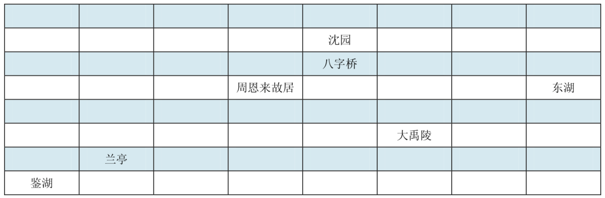
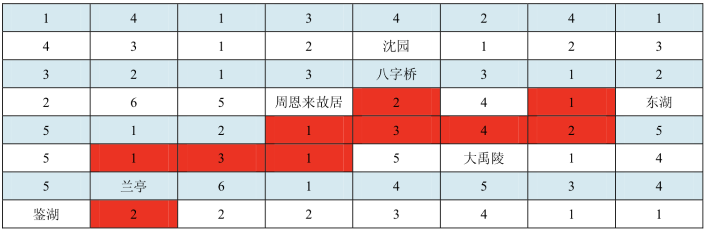
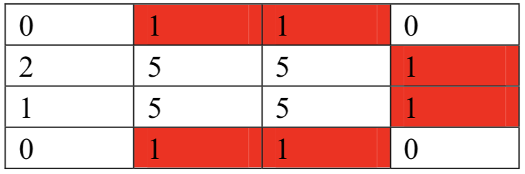
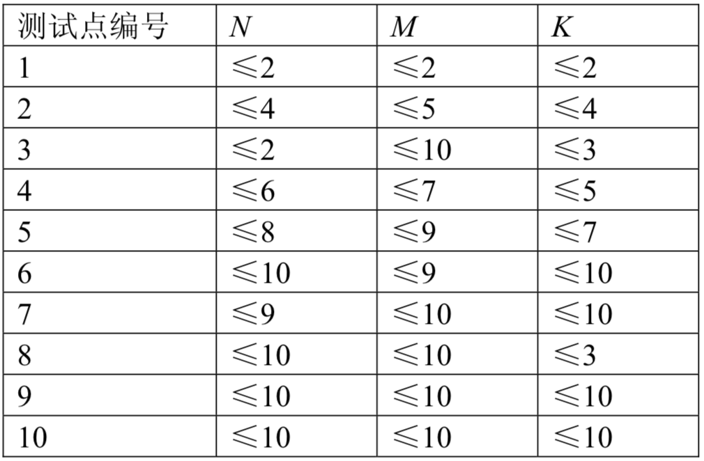

从未来过绍兴的小 D 有幸参加了Winter Camp 2008，他被这座历史名城的秀丽风景所吸引，强烈要求游览绍兴及其周边的所有景点。
主办者将绍兴划分为 $N$ 行 $M$ 列 $(N×M)$ 个方块，如下图 $(8×8)$：

景点含于方块内，且一个方块至多有一个景点。无景点的方块视为路。
为了保证安全与便利，主办方依据路况和治安状况，在非景点的一些方块内安排不同数量的志愿者；在景点内聘请导游（导游不是志愿者）。在选择旅游方案时，保证任意两个景点之间，存在一条路径，在这条路径所经过的每一个方块都有志愿者或者该方块为景点。既能满足选手们游览的需要，又能够让志愿者的总数最少。
例如，在上面的例子中，在每个没有景点的方块中填入一个数字，表示控制该方块最少需要的志愿者数目：

图中用深色标出的方块区域就是一种可行的志愿者安排方案，一共需要 20 名志愿者。由图可见，两个相邻的景点是直接（有景点内的路）连通的（如沈园和八字桥）。
现在，希望你能够帮助主办方找到一种最好的安排方案。
第一行有两个整数，$N$ 和 $M$，描述方块的数目。
接下来 $N$ 行，每行有 $M$ 个非负整数，如果该整数为 0，则该方块为一个景点；否则表示控制该方块至少需要的志愿者数目。相邻的整数用（若干个）空格隔开，行首行末也可能有多余的空格。
由 $N+ 1$ 行组成。第一行为一个整数，表示你所给出的方案中安排的志愿者总数目。
接下来 $N$ 行，每行 $M$ 个字符，描述方案中相应方块的情况：
注：请注意输出格式要求，如果缺少某一行或者某一行的字符数目和要求不一致（任何一行中，多余的空格都不允许出现），都可能导致该测试点不得分。
4 4 0 1 1 0 2 5 5 1 1 5 5 1 0 1 1 0
6 xoox ___o ___o xoox
【样例说明】
下图中深色方块安排了志愿者：

【评分标准】（comet暂不支持部分分）
本题共有10个测试点，每个测试点占本题总分数的10%。
对于每个测试点：
如果仅输出了正确的志愿者的总数目，则得到该测试点50%的分数；如果输出了正确的志愿者总数目与方案，则得到该测试点的全部分数；否则得 0 分。
【数据规模】
所有的 10 组数据中 $N,M$，以及景点数 $K$ 的范围规定如下：

输入文件中的所有整数均不小于 0 且不超过 $2^{16}$。
 Comet OJ
Comet OJ